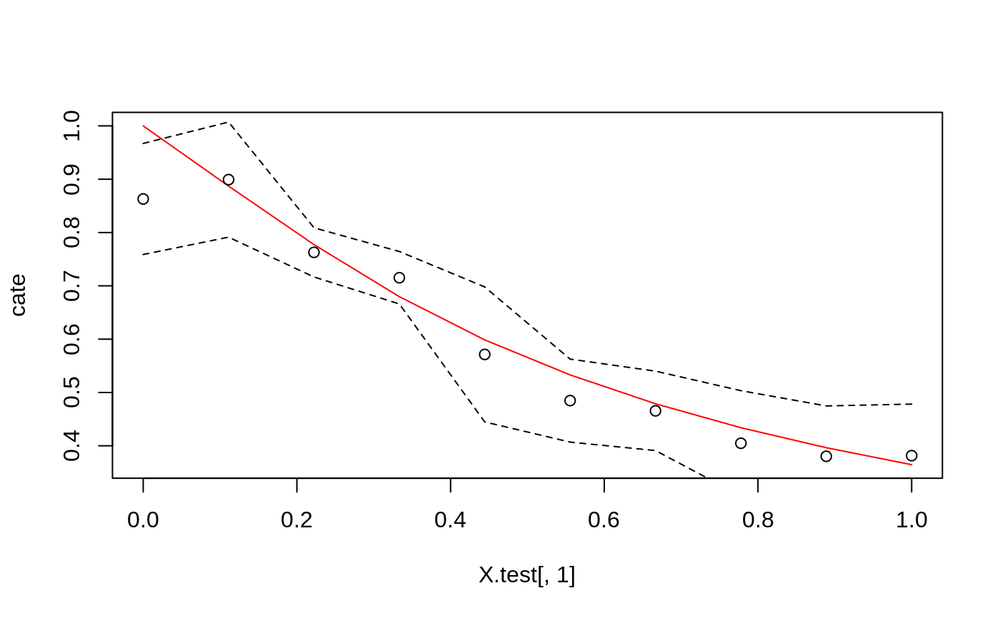
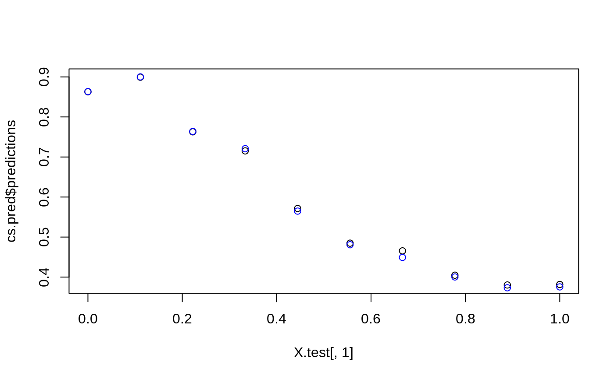

Trains a causal survival forest that can be used to estimate conditional average treatment effects tau(X). When the treatment assignment is unconfounded, we have tau(X) = E[Y(1) - Y(0) | X = x], where Y is the survival time up to a fixed maximum follow-up time. Y(1) and Y(0) are potental outcomes corresponding to the two possible treatment states.
causal_survival_forest( X, Y, W, D, W.hat = NULL, E1.hat = NULL, E0.hat = NULL, S.hat = NULL, C.hat = NULL, lambda.C.hat = NULL, failure.times = NULL, num.trees = 2000, sample.weights = NULL, clusters = NULL, equalize.cluster.weights = FALSE, sample.fraction = 0.5, mtry = min(ceiling(sqrt(ncol(X)) + 20), ncol(X)), min.node.size = 5, honesty = TRUE, honesty.fraction = 0.5, honesty.prune.leaves = TRUE, alpha = 0.05, imbalance.penalty = 0, stabilize.splits = TRUE, ci.group.size = 2, tune.parameters = "none", compute.oob.predictions = TRUE, num.threads = NULL, seed = runif(1, 0, .Machine$integer.max) )
| X | The covariates. |
|---|---|
| Y | The event time (may be negative). |
| W | The treatment assignment (must be a binary vector with no NAs). |
| D | The event type (0: censoring, 1: failure). |
| W.hat | Estimates of the treatment propensities E[W | Xi]. If W.hat = NULL, these are estimated using a separate regression forest. Default is NULL. |
| E1.hat | Estimates of the expected survival time conditional on being treated E[Y | X = x, W = 1]. If E1.hat is NULL, then this is estimated with an S-learner using a survival forest. |
| E0.hat | Estimates of the expected survival time conditional on being a control unit E[Y | X = x, W = 0]. If E0.hat is NULL, then this is estimated with an S-learner using a survival forest. |
| S.hat | Estimates of the conditional survival function S(t, x, w) = P[Y > t | X = x, W = w]. If S.hat is NULL, this is estimated using a survival forest. If provided: a N*T matrix of survival estimates. The grid should correspond to the T unique events in Y. Default is NULL. |
| C.hat | Estimates of the conditional survival function for the censoring process S_C(t, x, w). If C.hat is NULL, this is estimated using a survival forest. If provided: a N*T matrix of survival estimates. The grid should correspond to the T unique events in Y. Default is NULL. |
| lambda.C.hat | Estimates of the conditional hazard function -d/dt log(S_C(t, x, w)) for the censoring process. If lambda.C.hat is NULL, this is estimated from C.hat using a forward difference. If provided: a matrix of same dimensionality has C.hat. Default is NULL. |
| failure.times | A vector of event times to fit the survival curves at. If NULL, then all the unique event times are used. This speeds up forest estimation by constraining the event grid. Observed event times are rounded down to the last sorted occurance less than or equal to the specified failure time. The time points should be in increasing order. Default is NULL. |
| num.trees | Number of trees grown in the forest. Note: Getting accurate confidence intervals generally requires more trees than getting accurate predictions. Default is 2000. |
| sample.weights | Weights given to each sample in estimation. If NULL, each observation receives the same weight. Note: To avoid introducing confounding, weights should be independent of the potential outcomes given X. Sample weights are not used in survival spliting. Default is NULL. |
| clusters | Vector of integers or factors specifying which cluster each observation corresponds to. Default is NULL (ignored). |
| equalize.cluster.weights | If FALSE, each unit is given the same weight (so that bigger clusters get more weight). If TRUE, each cluster is given equal weight in the forest. In this case, during training, each tree uses the same number of observations from each drawn cluster: If the smallest cluster has K units, then when we sample a cluster during training, we only give a random K elements of the cluster to the tree-growing procedure. When estimating average treatment effects, each observation is given weight 1/cluster size, so that the total weight of each cluster is the same. Note that, if this argument is FALSE, sample weights may also be directly adjusted via the sample.weights argument. If this argument is TRUE, sample.weights must be set to NULL. Default is FALSE. |
| sample.fraction | Fraction of the data used to build each tree. Note: If honesty = TRUE, these subsamples will further be cut by a factor of honesty.fraction. Default is 0.5. |
| mtry | Number of variables tried for each split. Default is \(\sqrt p + 20\) where p is the number of variables. |
| min.node.size | A target for the minimum number of observations in each tree leaf. Note that nodes with size smaller than min.node.size can occur, as in the original randomForest package. Default is 5. |
| honesty | Whether to use honest splitting (i.e., sub-sample splitting). Default is TRUE. For a detailed description of honesty, honesty.fraction, honesty.prune.leaves, and recommendations for parameter tuning, see the grf algorithm reference. |
| honesty.fraction | The fraction of data that will be used for determining splits if honesty = TRUE. Corresponds to set J1 in the notation of the paper. Default is 0.5 (i.e. half of the data is used for determining splits). |
| honesty.prune.leaves | If TRUE, prunes the estimation sample tree such that no leaves are empty. If FALSE, keep the same tree as determined in the splits sample (if an empty leave is encountered, that tree is skipped and does not contribute to the estimate). Setting this to FALSE may improve performance on small/marginally powered data, but requires more trees (note: tuning does not adjust the number of trees). Only applies if honesty is enabled. Default is TRUE. |
| alpha | A tuning parameter that controls the maximum imbalance of a split. Default is 0.05 (meaning the count of failures on each side of a split has to be at least 5 % of the total observation count in a node) |
| imbalance.penalty | A tuning parameter that controls how harshly imbalanced splits are penalized. Default is 0. |
| stabilize.splits | Whether or not the treatment and censoring status should be taken into account when determining the imbalance of a split. Default is TRUE. |
| ci.group.size | The forest will grow ci.group.size trees on each subsample. In order to provide confidence intervals, ci.group.size must be at least 2. Default is 2. |
| tune.parameters | (Currently only applies to the regression forest used in W.hat estimation) A vector of parameter names to tune. If "all": all tunable parameters are tuned by cross-validation. The following parameters are tunable: ("sample.fraction", "mtry", "min.node.size", "honesty.fraction", "honesty.prune.leaves", "alpha", "imbalance.penalty"). If honesty is FALSE the honesty.* parameters are not tuned. Default is "none" (no parameters are tuned). |
| compute.oob.predictions | Whether OOB predictions on training set should be precomputed. Default is TRUE. |
| num.threads | Number of threads used in training. By default, the number of threads is set to the maximum hardware concurrency. |
| seed | The seed of the C++ random number generator. |
A trained causal_survival_forest forest object.
An important assumption for identifying the conditional average treatment effect tau(X) is that there exists a fixed positive constant M such that the probability of observing an event time past the maximum follow-up time Y.max is at least M (formally, we assume: P(Y >= Y.max | X) > M).
This means that the individual censoring probabilities (by default estimated using a survival_forest on D' = 1 - D) should not get too low. This function provides a warning if these estimates get below 0.2, if they drop all the way down to below 0.05, we emit a stronger warning that you can not expect causal survival forest to deliver reliable estimates.
The practical issue is that we can not reliably extrapolate the survival curves sufficiently far into the future (where most observations will be censored). A workaround is to re-define the estimand as the treatment effect up to some suitable maximum follow-up time Y.max. One can do this in practice by thresholding Y before running causal_survival_forest: D[Y >= Y.max] = 1 and Y[Y >= Y.max] = Y.max. The online vignette on survival data has more details.
Causal survival forest computes two nuisance components, the estimated survival and censoring curves (S.hat and C.hat). Recall that the Kaplan-Meier or Nelson-Aalen estimates of the survival curve is a step function that only changes at points at which there is an event D = 1 (or D' = 1 - D for the censoring curve). For very dense event data Y there may not be any accuracy benefit to fitting these curves on the complete grid compared with the computational cost, which scales as O(m*n) in each tree node (where m is the number of events in the node, and n the number of split points).
The suggested resolution to this issue is to round or relabel the event data Y to a coarser resolution. The argument `failure.times` can be used for this purpose.
# \donttest{ # Train a standard causal survival forest. n <- 3000 p <- 5 X <- matrix(runif(n * p), n, p) W <- rbinom(n, 1, 0.5) Y.max <- 1 failure.time <- pmin(rexp(n) * X[, 1] + W, Y.max) censor.time <- 2 * runif(n) Y <- pmin(failure.time, censor.time) D <- as.integer(failure.time <= censor.time) cs.forest <- causal_survival_forest(X, Y, W, D) # Predict using the forest. X.test <- matrix(0.5, 10, p) X.test[, 1] <- seq(0, 1, length.out = 10) cs.pred <- predict(cs.forest, X.test, estimate.variance = TRUE) # Plot the estimated CATEs along with 95% confidence bands. r.monte.carlo <- rexp(5000) cate <- rep(NA, 10) for (i in 1:10) { cate[i] <- mean(pmin(r.monte.carlo * X.test[i, 1] + 1, Y.max) - pmin(r.monte.carlo * X.test[i, 1], Y.max)) } plot(X.test[, 1], cate, type = 'l', col = 'red')# Compute the best linear projection on the first covariate. best_linear_projection(cs.forest, X[, 1])#> #> Best linear projection of the conditional average treatment effect. #> Confidence intervals are cluster- and heteroskedasticity-robust (HC3): #> #> Estimate Std. Error t value Pr(>|t|) #> (Intercept) 0.926755 0.011694 79.249 < 2.2e-16 *** #> A1 -0.659274 0.027039 -24.383 < 2.2e-16 *** #> --- #> Signif. codes: 0 ‘***’ 0.001 ‘**’ 0.01 ‘*’ 0.05 ‘.’ 0.1 ‘ ’ 1 #># Train the forest on a less granular grid. cs.forest.grid <- causal_survival_forest(X, Y, W, D, failure.times = seq(min(Y), max(Y), length.out = 50)) plot(X.test[, 1], cs.pred$predictions)# }